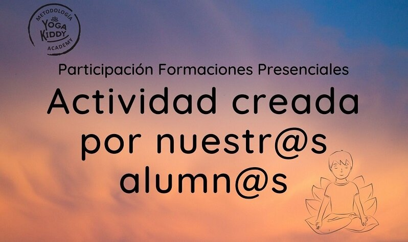

El 15 y 16 de febrero compartimos una formación y experiencia única con un hermoso grupo de alumnas.
Gracias a todas por su participación y a nuestras facilitadoras Peggy y Javiera que realizan cada formación con dedicación y cariño ❤
Compartimos con ustedes un vídeo del momento de mucha creatividad. Nos animamos y pusimos en práctica las herramientas aprendidas en la formación sugeridas para estimular la imaginación de los niños y la práctica del yoga.
Soy un avión aterrizando en una tormenta
Un águila contra el viento
Una oruga que quiere ser mariposa
Una flor de loto
¿Cómo suena una mecedora con un viejito al atardecer? ¿Cómo suena una rabieta de un zorro? Una rabieta.. ¿Cómo suena… un pueblo incendiándose?